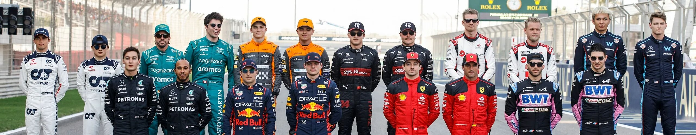

PILOTOS DE F1
DESCRIPCIÓN
Los pilotos de Fórmula 1 son conductores de élite en el deporte del automovilismo, compitiendo en carreras de alta velocidad en autos de alta tecnología. Destacan por su destreza al volante, resistencia física y habilidades mentales, enfrentando desafíos extremos en la pista mientras luchan por la gloria en el escenario mundial.
REQUISITOS
Convertirse en piloto de Fórmula 1 es un proceso altamente competitivo y exigente que requiere una combinación única de habilidades y oportunidades. A continuación, se enumeran los requisitos típicos para convertirse en piloto de Fórmula 1:
- Talento Natural al Volante: Debes tener un talento natural para la conducción y una habilidad excepcional al volante. Esto incluye una gran coordinación, reflejos rápidos y una capacidad innata para sentir y controlar un automóvil en situaciones de alto rendimiento.
- Formación en Karting: Muchos pilotos de Fórmula 1 comienzan su carrera en el karting, una categoría de carreras de automóviles de menor escala que es una excelente plataforma de aprendizaje. Ganar experiencia en karting te permite desarrollar tus habilidades de conducción y competir desde una edad temprana.
- Categorías de Automovilismo Junior: Después del karting, los aspirantes a pilotos suelen avanzar a categorías de automovilismo junior, como la Fórmula 4, Fórmula 3 o Fórmula 2, para continuar su desarrollo y ganar experiencia en autos de carreras más potentes y avanzados.
- Patrocinadores y Apoyo Financiero: La Fórmula 1 es costosa, y los equipos suelen buscar pilotos con apoyo financiero, ya sea a través de patrocinadores personales o respaldo de empresas. Es importante tener recursos financieros para financiar tu carrera.
- Contactos y Redes: Establecer conexiones y construir una red en el mundo del automovilismo es fundamental. Conocer a personas influyentes en la industria y hacer contactos en equipos de F1 puede abrir puertas y oportunidades.
- Desempeño en Carreras: Ganar carreras y títulos en las categorías junior es esencial para destacar y atraer la atención de los equipos de Fórmula 1. El rendimiento en pista es un factor clave para ser considerado.
- Pruebas de Pilotos (Test Drives): Algunos pilotos son seleccionados para realizar pruebas de pilotos con equipos de F1. Estas pruebas ofrecen la oportunidad de demostrar tus habilidades y conocimientos técnicos ante los equipos.
- Mentalidad y Compromiso: La dedicación, la disciplina y la resistencia mental son cruciales para sobresalir en la Fórmula 1. Las temporadas son largas y agotadoras, y la presión es constante.
- Edad Adecuada: La mayoría de los pilotos de F1 comienzan sus carreras en las categorías junior en la adolescencia o incluso antes. Aunque no hay una edad límite estricta para ingresar a la F1, la juventud a menudo es un activo debido a la naturaleza física y exigente del deporte.
- Oportunidades con Equipos: Finalmente, necesitas una oportunidad con un equipo de F1 dispuesto a contratarte como piloto. Los equipos buscan una combinación de talento, patrocinio y potencial de desarrollo.
En resumen, convertirse en piloto de Fórmula 1 requiere un conjunto excepcional de habilidades de conducción, oportunidades en carreras junior, apoyo financiero, conexiones en la industria y un alto rendimiento en el automovilismo. Es un camino desafiante, pero para aquellos que lo logran, la Fórmula 1 representa el pináculo del automovilismo deportivo.
SUPERLICENCIA
Además de todo lo anterior, es necesaria una licencia especial para poder correr en la categoria reina del automovilismo. Para poder obtenerla hace falta que se cumplan ciertas condiciones:
- El piloto debe tener al menos 18 años cuando participe en su primera carrera de F1.
- Debe ser titular de una licencia internacional de competición de grado A.
- Tener un permiso de conducir válido.
- Imprescindible aprobar un examen teórico de la FIA sobre las reglas y los códigos deportivos de la F1.
- Haber completado el 80% de dos temporadas en un campeonato de monoplazas que otorgue puntos de Superlicencia.
- Sumar un mínimo de 40 puntos en el sistema de puntos de la Superlicencia en las últimas tres temporadas de competición.
En pocas palabras, la Superlicencia no deja de ser un carnet de conducir para Fórmula 1. Sin ella, un piloto no puede participar en un Mundial de F1, ser parte de entrenamientos libres o de los test de pretemporada. Se trata de un permiso que lleva varias décadas implantado. A continuación se encuentra una imagen con los puntos que otorga la FIA a cada piloto según su posición en las competencias indicadas.